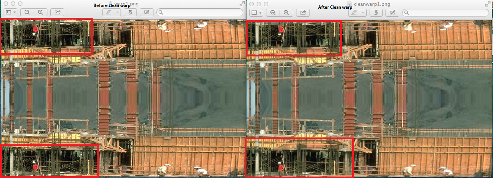
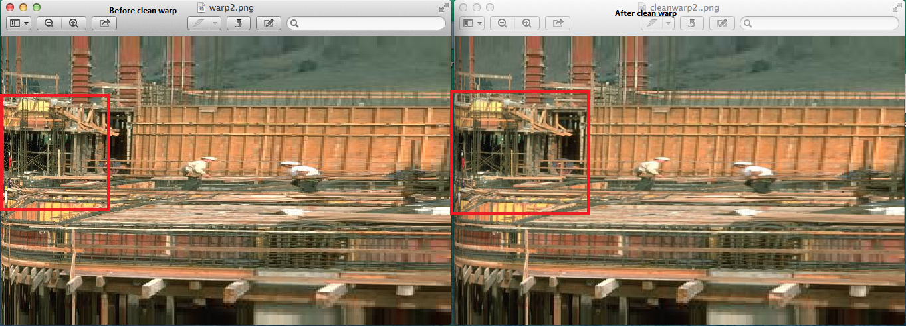
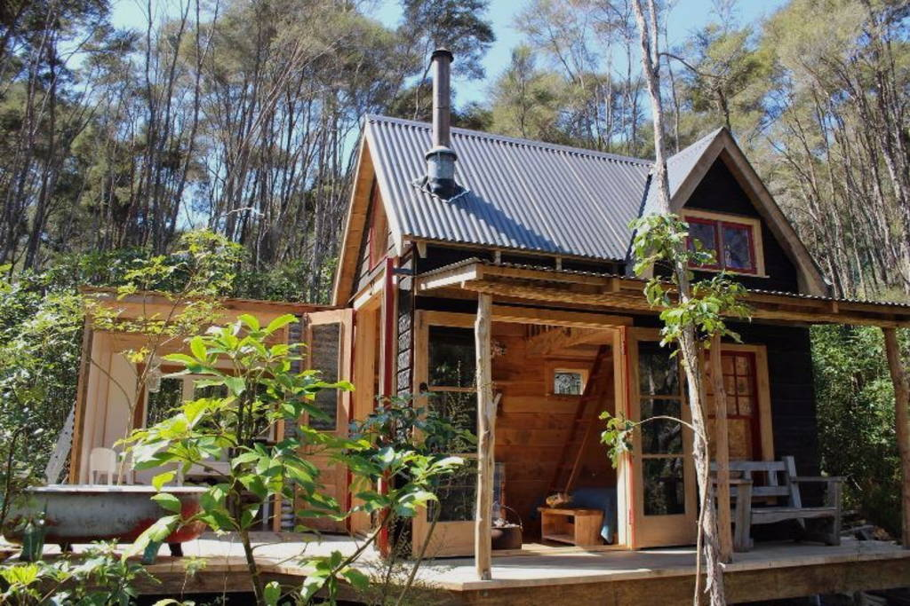
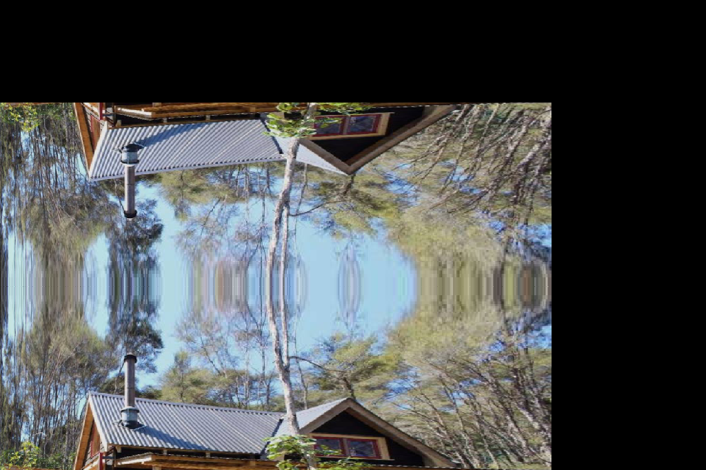
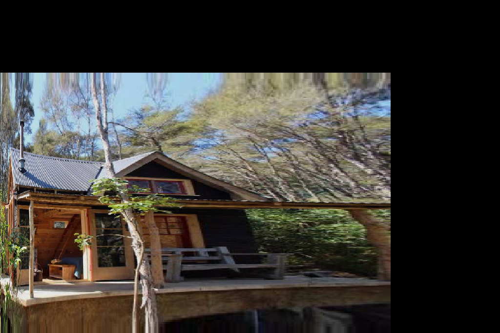

Pratyush Singh
11/11/2016
Home Work 7
original image
okWarp Left Image is before clean and right image is after clean u = sqrt(x) , v = 0.5 * (1 + sin(y * 3.1415926536))

normal Left Image is before clean and right image is after clean u = pow(x, 0.25) , v = pow(sin(3.14 * 0.5 * y), 2)

original image

before clean u = sqrt(x) , v = 0.5 * (1 + sin(y * 3.1415926536))
after clean u = sqrt(x) , v = 0.5 * (1 + sin(y * 3.1415926536))

before clean u = pow(x, 0.25) , v = pow(sin(3.14 * 0.5 * y), 2)

after clean u = pow(x, 0.25) , v = pow(sin(3.14 * 0.5 * y), 2)
In this project i first find the pixel bounding box, then find the corresponding points in input image, then i calculated if it is a magnification or minification.
If it is a magnification then i performed bileanear interpolation and if it is a minification then i performed supersampling operation on it.
In Bileanear interpolation first i found the inverse map of u , v from output x , y. then i found the bounding box of this u ,v. then i calculated the weight based on closeness to the pixel.
like for (1.7 , 1.7) i will get x1 = 1 y1 = 1 x2 = 2 y2 = 2 so the weight would be 1.7 - 1 = 0.7 , then 1 - 0.7 = 0.3 like this... then we wil find the average with these weight.
In supersampling i calculated position on input image that one pixel on the output image maps to. get the bounding box these 4 points.
if it is smaller than 1 then pick the color at the point that the center of the output image maps to.
if it is pigger than 1 then get the points in the input image that 9 points around the pixel on the output image maps to.
pick color of those 9 positions and calculate its weighted average.for corners i have taken 1/16 for midpoint on edge of square 1/8 for center 1/4